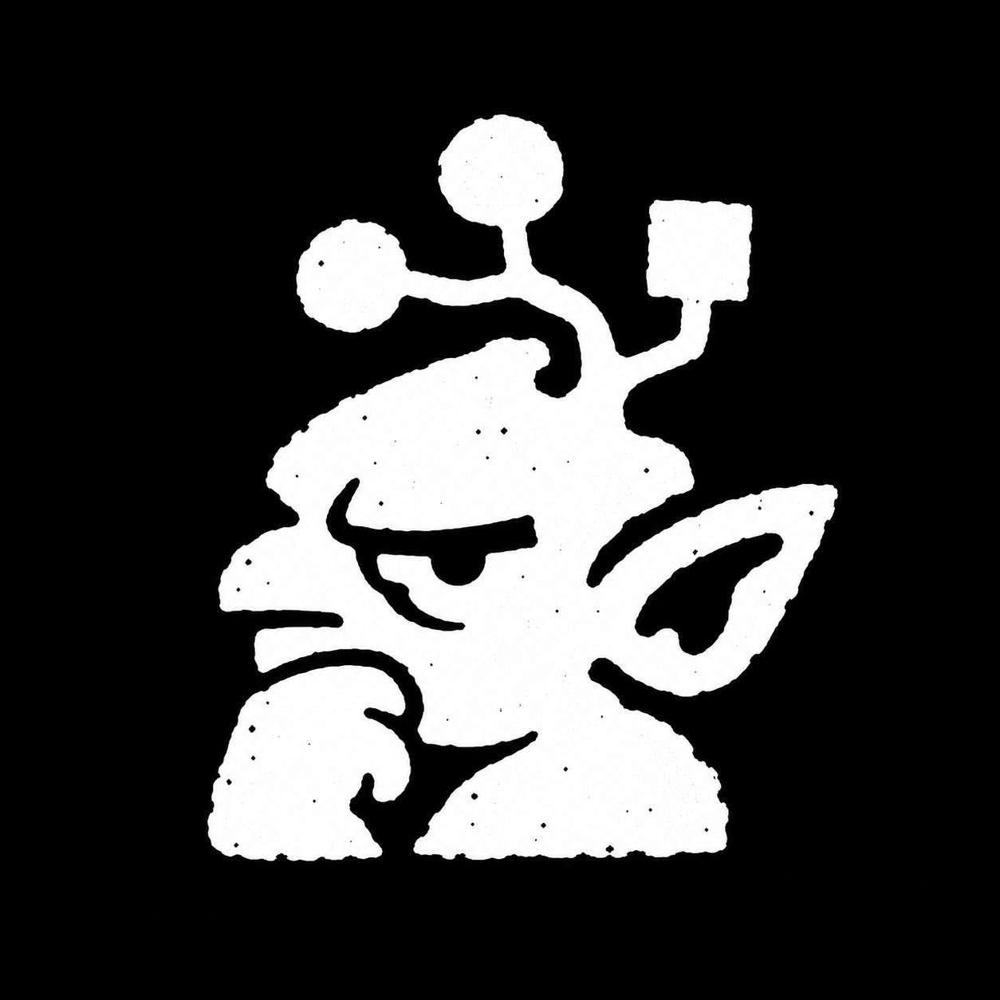

Graph of Thonking
Give Pi a code map before it reads the repository.
A native Pi wrapper for Ripwire. Four tools cover task context, symbol navigation, change evidence, and diagnostics. No MCP server, automatic scans, or tool overrides.
Install
Install Ripwire from its official releases.
Put the executable on
PATH, in~/.local/bin, or setRIPWIRE_BINto its absolute path.Install the package:
pi install git:github.com/Jeecabs/graph-of-thonkingRun
/reloadin an existing Pi session.Run
/thonk status.
The wrapper does not download executables or change other agents' settings. Development verification uses Ripwire 0.4.0. Other releases may change flag behavior.
Use
/thonk map
/thonk search cache invalidation
/thonk pack add retry handling
/thonk expand src/cache.ts:invalidate
/thonk callers invalidate
/thonk tests
/thonk review main
/thonk quality
/thonk delta main..HEAD
/thonk trace /tmp/error.txt
Run /thonk for an action picker. Commands accept an action followed by literal target text. Do not add shell quotes or CLI flags.
Commands add evidence to the conversation without starting a model turn. In the TUI, Escape cancels the current command. Expand a result card to read its evidence and coverage limits.
Agent tools
| Tool | Actions | Target |
|---|---|---|
ripwire_context |
map, search, pack, recall | Task text, except map |
ripwire_symbol |
expand, outline, callers, callees, uses, impact, verify, graph | Symbol selector, claim, or graph expression |
ripwire_changes |
situ, tests, review, quality, delta | Optional files for situ/tests, optional base for review, required commit/range for delta |
ripwire_diagnose |
trace, help, status | Trace file or task text, except status |
Tool calls accept a local root and a timeoutMs deadline. The default deadline is 60 seconds. The maximum is five minutes.
Map, search, pack, recall, review, and trace accept a token budget. The default is 6000. Ripwire estimates tokens, so this is not a tokenizer guarantee. Unsupported combinations fail rather than silently ignore a parameter.
Use limit for map, recall, graph, and quality. Use offset for graph, quality, and review. Prefer file:name or canonical IDs when symbol names collide.
Multiple sessions in one checkout
- Each extension instance creates a private cache directory on first use. Reloads and forks get a new directory.
- Child processes receive that directory through
TMPDIRandXDG_CACHE_HOME. No shared wrapper cache or checkout lock exists. - Each invocation writes separate stdout and stderr artifacts, even when sessions reuse the same tool-call ID.
- Cancellation targets only that invocation's process group on macOS and Linux.
- Session shutdown cancels its own invocations, waits for them, then removes only its private cache.
- Reports remain available after shutdown. Their directories use the
graph-of-thonking-prefix under the system temporary directory. - The wrapper never stores a baseline, writes an acknowledgment, edits source, or intercepts another session's tools.
Concurrent reads do not create an atomic checkout snapshot. Another session can edit files during a scan. Re-run affected queries after edits settle. Independent caches trade some cross-session reuse for isolation.
Ripwire may honor repository-local settings and sidecars. Use trusted checkouts. See the upstream contract notes.
Results and boundaries
The wrapper retains Ripwire's raw evidence, confidence, and coverage warnings. It does not turn graph counts into completeness claims.
- A zero graph count means none found, not none exist.
- The tests action reports obligations. It never runs tests. Exit 4 remains an obligation report, not an execution failure.
- Delta exit 2 remains a regression report. Exit 0 does not prove that new code has no debt.
- Delta requires committed input, such as
HEAD~1..HEAD. The wrapper excludes bare working-tree delta because it can delete a stale shared baseline. - Review with a base uses Ripwire's merge-base semantics, not a direct comparison against the base tip.
- Unexpected exit codes, deadlines, and cancellation produce errors with artifact paths.
- Output previews allow 40 KiB of stdout and 8 KiB of stderr, with 1600 and 300 lines respectively. Small notices sit outside those limits.
- Large reports remain on disk. The runner does not buffer the full output in memory.
- Remote cloning, arbitrary flags, source edits, baseline writes, and automatic recommendation execution are not exposed.
Raw artifacts can contain source code or sensitive diagnostics. They use private directories and mode-0600 files. Delete old artifacts when no longer needed. The wrapper uploads no reports.
Development
npm install
RIPWIRE_TEST_BIN=/absolute/path/to/ripwire npm test
npm run check
Without RIPWIRE_TEST_BIN, the real-binary test skips. Other tests cover independent sessions, cancellation, deadlines, and large-output preservation.
License
MIT. Ripwire is a separate Apache-2.0 project. This package does not bundle its executable.